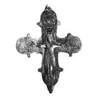
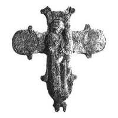

Catalog › CE-1020 · KOR2003-III.1.1.46
Encolpion întreg cu balamale de sus parțial rupte, relief clar, niello păstrat în principal în contururi
sec. XII – început XIII (1101–1300) · Tver, Rusia · Muzeul de Istorie și Etnografie Locală, Tver
double-sided reliquary cross (enkolpion), aramă; c. XII – început XIII (1101–1300); found at Tver, Rusia; kept at Muzeul de Istorie și Etnografie Locală, Tver.




Identificare
- Categorie
- Encolpion bivalv (relicvar)
- Material
- Aramă
- Tehnică
- Turnare în relief; Gravare (incizie); Niello
- Stare
- Întreagă
- Dimensiuni
- Î 80 × L 70 mm
Iconografie
- Descriere avers
- Encolpion întreg (balamalele de sus ale ambelor valve parțial rupte, pierdut medalionul de sus al valvei de revers). Reliefurile sunt clare, din imaginile în niello s-au păstrat în principal liniile de contur.
- Inscripții
- МР ΘҮ; НОНЪ; МР ΘҮ/ПАВ; ПЕ ТО
- Limba
- Slavonă
Datare și atribuire
- Datare
- sec. XII – început XIII (1101–1300)
- Centru
- Necunoscut
- Tipologie
- Korzukhina–Peskova 2003, tip III 1 1
Descoperire
- Localitate
- Tver
- Țară
- Rusia
- Context
- Fortificație
- Anul
- 1995
Păstrare și referințe
- Colecție
- Muzeul de Istorie și Etnografie Locală, Tver
- Bibliografie
- G. F. Korzukhina, A. A. Peskova, Древнерусские энколпионы. Нагрудные кресты-реликварии XI–XIII вв., Sankt-Petersburg, 2003 [Korzukhina–Peskova 2003], p. 107, cat. nr. III 1 1/46, reprodusă la Табл. 56 (planșe, p. 298). Bibliografie citată în sursă: Чукова 1998, 322–326, рис. на с. 324; Чукова 2001, рис. 1, 1.
- Figura
- Табл. 56
- Planșe
- Korzukhina–Peskova 2003, Табл. 56 (planșă fără paginație proprie în PDF; p. 298 tipărită)
- Observații
- Datare după Peskova: sec. XII – început XIII. Circumstanțe: Săpături V. A. Lapșin pe teritoriul Kremlinului, 1995; descoperire dintr-un strat de pământ remaniat (șifru de câmp 1a-13/B 1, gl. 243 № 38, în stratul datat nu mai devreme de anii 70 ai sec. XIII). Inscripții adâncite pe față sub mâinile lui Hristos: МР ΘҮ la stânga, НОНЪ la dreapta; pe revers МР ΘҮ/ПАВ, ПЕ ТО. Credit: T. A. Ciukova (text), foto V. A. Lapșin, desen I. V. Zabotkin. Inscripții mixte: formule grecești și nume slavone, unele stilizate sau stricate. Coordonate: nu sunt date în sursă.
Citare: Corpus Encolpiorum, CE-1020, Encolpion întreg cu balamale de sus parțial rupte, relief clar, niello păstrat în principal în contururi, https://vitaliejosanu1979-ux.github.io/primul-meu-proiect/piese/KOR2003-III.1.1.46/ (accesat 2026-10-17).